Manual de uso
LadderLab
Ladder para TIA Portal
Curso y simulador de programación LAD para PLC S7‑1200/1500, de básico a avanzado, con una ruta aplicada a grupos electrógenos y plantas mineras.
Versión de noviembre de 2026 · Windows (instalador), Android (APK) y web · 24 lecciones · 20 retos autocorregidos · funciona sin conexión
1. Qué es LadderLab
LadderLab enseña a programar en Ladder (LAD, IEC 61131‑3) tal como se hace en TIA Portal para los PLC Siemens S7‑1200 y S7‑1500. Cada lección combina tres cosas:
- Teoría breve con las notas de cómo se hace en TIA Portal y en planta.
- Un PLC simulado que corre en el navegador: lee entradas, ejecuta el programa segmento por segmento y escribe salidas cada 10 ms, como el ciclo de scan real.
- Un reto que se corrige solo: el corrector ejecuta tu programa con una secuencia de entradas y tiempos, y en los procesos de la ruta minera, contra un modelo de planta que responde y detecta fallas peligrosas.
| Nivel | Lecciones | Contenido |
|---|---|---|
| Básico | 6 | Ciclo de scan, TIA Portal y direcciones, contactos NA/NC, AND/OR, autorretención, Set/Reset |
| Intermedio | 5 | Flancos, TON/TOF/TP, CTU/CTD, comparar/mover/calcular, estrella‑triángulo |
| Avanzado | 4 | OB/FC/FB/DB, secuencias, analógicas (NORM_X, SCALE_X), puesta en marcha y diagnóstico |
| Grupos y minería | 9 | Protecciones del grupo, falla de arranque, TTA red‑grupo, discrepancia de interruptores, sincronismo, reparto de carga, arranque por demanda, fajas y bombas |
TIA Portal, SIMATIC y S7 son marcas de Siemens AG. LadderLab es una herramienta de estudio independiente: no reemplaza a TIA Portal ni a S7‑PLCSIM.
2. Abrir la app
| Dónde | Cómo | Progreso guardado |
|---|---|---|
| Android, instalada (recomendado) | APK: descárgalo desde github.com/nilthonnn/nefer/releases (busca LadderLab), ábrelo y acepta instalar. | Sí |
| Android, desde Chrome | Abre la dirección web y toca ⤓ Instalar en este equipo o menú ⋮ → Instalar app. | Sí |
| Android, sin instalar | Abre LadderLab.html (un solo archivo) desde Descargas con Chrome. | Puede perderse al cerrar |
| Windows 10/11, instalada (recomendado) | Instalador LadderLab-Setup.exe: menú Inicio y escritorio, ventana propia con Edge. | Sí |
| Computadora, sin instalar | Descomprime LadderLab-demo.zip y abre LadderLab.html o LadderLab/index.html. | Sí, en ese navegador |
En Android no abras LadderLab/index.html desde la carpeta del .zip. Android entrega ese archivo a Chrome como
content://, y desde ahí Chrome no deja cargar los archivos de al lado (lecciones.js, energia.js): la página se queda
en blanco. Usa el APK, la versión web o LadderLab.html, que lleva todo dentro.
2.1 APK para Android
- En el teléfono, abre
https://github.com/nilthonnn/nefer/releases?q=ladderlaby descarga ladderlab.apk de la versión más reciente. - Ábrelo desde la notificación de descarga o desde Archivos → Descargas.
- Android pedirá permitir instalar apps desconocidas desde Chrome o Archivos: acéptalo para esa fuente y toca Instalar.
- Abre LadderLab desde el cajón de aplicaciones.
La app no pide permiso de Internet: todo va dentro. El botón atrás del teléfono cierra el editor y el menú, vuelve al inicio, y con dos toques sale. Exportar .json guarda en Descargas e Importar .json abre el selector de archivos. Si al actualizar Android dice que el paquete entra en conflicto, desinstala la versión anterior (las de prueba van con firma provisional).
2.2 Instalador para Windows
- Descarga LadderLab-Setup.exe desde
github.com/nilthonnn/nefer/releases(busca LadderLab para Windows) y ábrelo. - Si aparece «Windows protegió su PC», toca Más información → Ejecutar de todas formas: el instalador no lleva un certificado comercial.
- Sigue el asistente (en español). No pide permisos de administrador: se instala para tu usuario en
%LOCALAPPDATA%\Programs\LadderLab. - Abre LadderLab desde el menú Inicio o el escritorio. Se abre en su propia ventana con Microsoft Edge (modo aplicación) y funciona sin internet. En el mismo grupo del menú Inicio está el manual en PDF.
Para actualizar, ejecuta el instalador nuevo: se instala encima y conserva tu progreso, que vive en el perfil de Edge. Para quitarla: Configuración → Aplicaciones → LadderLab → Desinstalar. Si el equipo no tiene Edge ni Chrome, los accesos abren la app con el navegador predeterminado.
2.3 Versión web e instalación desde Chrome o Edge
Abre https://nilthonnn.github.io/nefer/ladder/ (disponible cuando se publique la versión). En Android aparece el botón
⤓ Instalar en este equipo en el inicio, o usa menú ⋮ → Instalar app. Queda como una app y abre sin señal después de la primera visita.
2.4 Sin instalar: el archivo único y el .zip
- Android: descarga
LadderLab.html, ábrelo desde Descargas y elige Chrome si pregunta con qué abrirlo. - Computadora: descomprime
LadderLab-demo.zipen una carpeta y haz doble clic enLadderLab.htmlo enLadderLab/index.html. Funciona en Chrome, Edge, Firefox y Safari, sin conexión.
El progreso se guarda en el navegador del equipo. Si cambias de navegador o de forma de abrirla, empiezas de cero; tus programas los puedes llevar con Exportar / Importar .json del Laboratorio.
En pantallas angostas, el menú de lecciones está en el botón ☰, y cada lección tiene el enlace ▶ Ir al simulador para saltar la teoría.
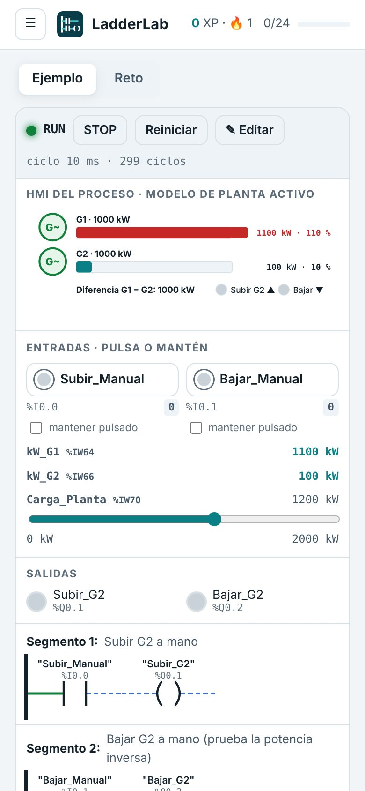
3. La pantalla de inicio
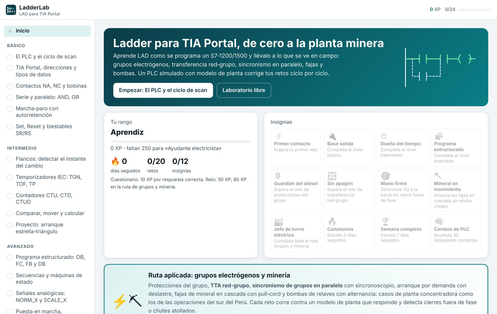
- Barra superior: tu experiencia (XP), la racha de días seguidos 🔥 y las lecciones completadas.
- Continuar: abre la última lección que estabas haciendo, o la siguiente pendiente.
- Tu rango: sube cada 250 XP, de Aprendiz a Maestro LAD.
- Insignias: en gris las que faltan; pasa el puntero (o mantén el dedo) para ver cómo se gana cada una.
- Ruta aplicada: acceso directo a la siguiente lección pendiente de grupos y minería.
- Niveles: todas las lecciones, con su duración y si tienen reto. El círculo verde ✓ marca las completadas.
4. Cómo está hecha una lección
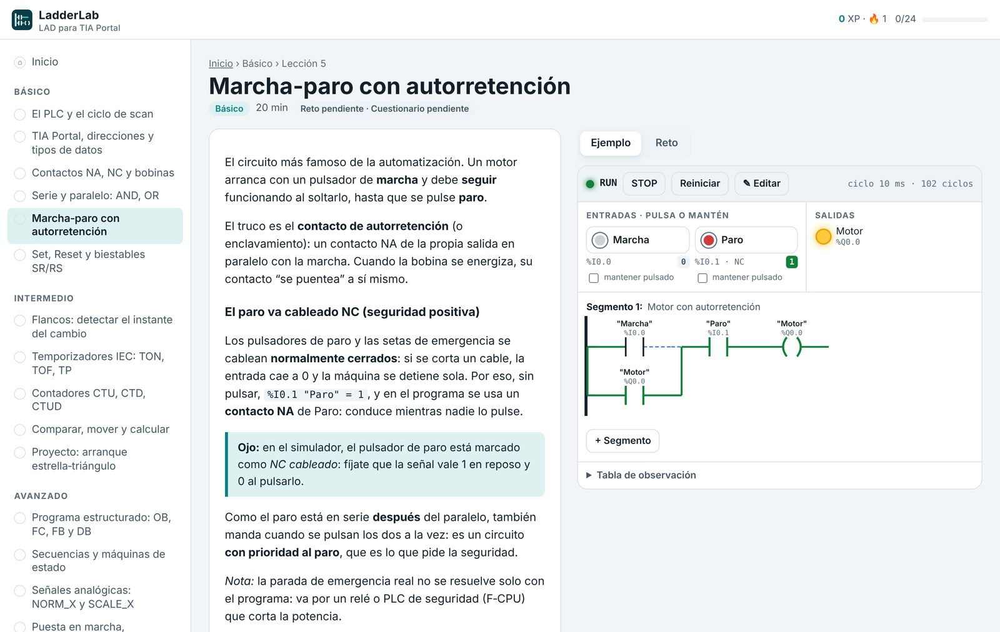
- Teoría: lee el texto; los recuadros de color son las notas clave y las prácticas de planta.
- Ejemplo: la pestaña Ejemplo carga un programa ya hecho. Pruébalo con las entradas; puedes editarlo sin miedo, se restablece al volver a la lección.
- Reto: la pestaña Reto tiene el enunciado, las variables y un programa inicial. Tu avance se guarda solo.
- Cuestionario: al pie de la teoría. Pulsa Corregir: verás la respuesta correcta y la explicación de cada pregunta.
Una lección se marca como completada cuando superas su reto (si tiene) y aciertas al menos dos tercios del cuestionario.
5. El simulador del PLC
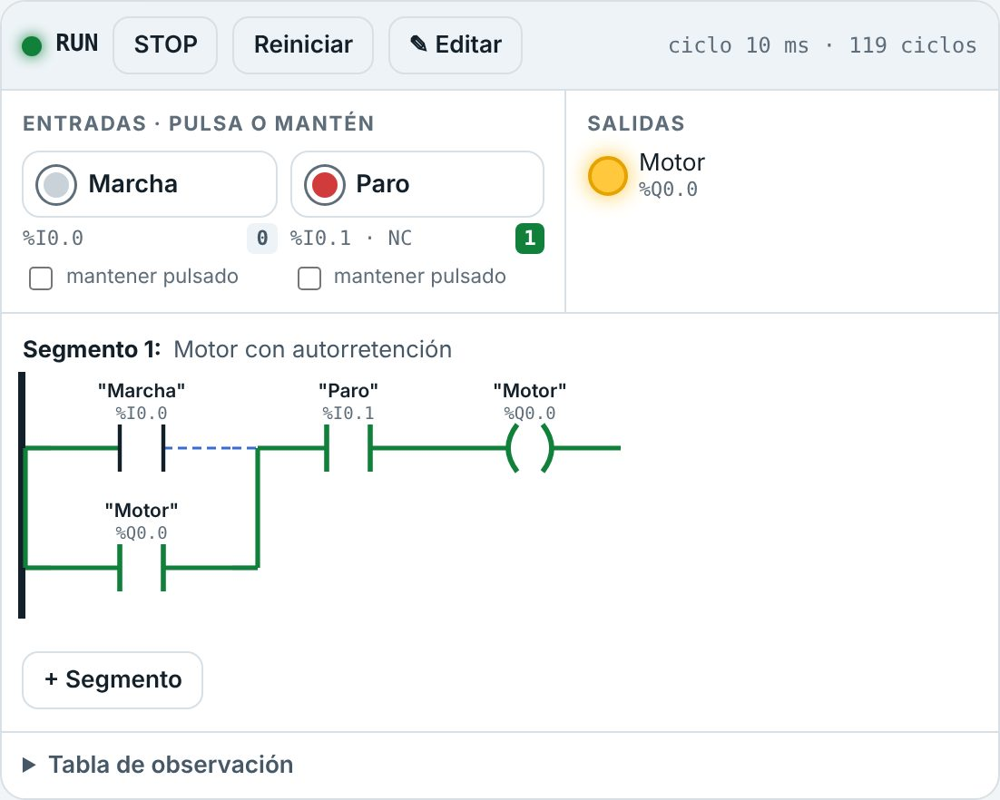
5.1 Barra de la CPU
| Control | Qué hace |
|---|---|
| RUN / STOP | Pone la CPU en marcha o la detiene. En STOP las salidas van a 0, como en un PLC real. |
| Reiniciar | Borra marcas, temporizadores, contadores y el estado del modelo de planta (y una falla de planta). Conserva el programa y las entradas. |
| ✎ Editar | Activa el modo edición (sección 6). El PLC sigue en RUN mientras editas. |
| Contador de ciclos | Ciclo de 10 ms y número de ciclos ejecutados; si hay una falla de planta, lo avisa aquí. |
5.2 Entradas
| Tipo | Cómo se usa | Señal |
|---|---|---|
| Pulsador NA | Mantén pulsado (ratón, dedo, o Espacio). La casilla mantener pulsado lo deja apretado. | 1 mientras se pulsa |
| Pulsador NC cableado | Paros, térmicos. Igual que el NA. | 1 en reposo, 0 al pulsar |
| Selector (botón cuadrado) | Un toque lo cambia de posición. | 1 / 0 |
| Pull‑cord (NC, enclava) | Un toque lo dispara y queda disparado; otro toque lo rearma (como en el propio interruptor de la faja). | 1 normal, 0 disparado |
| Señal de planta | La mueve el modelo de planta (realimentación de interruptores, grupo en tensión…). Si dice pulsa = simular falla, el botón provoca esa falla. | La decide la planta |
| Analógica | Barra deslizante (nivel en bruto 0…27648, o kW). Las medidas de planta (frecuencia, ángulo, kW) solo se leen. | Valor entero |
5.3 Salidas, segmentos y tabla de observación
- Salidas: lámparas que se encienden con la salida
%Qen 1. - Segmentos: el programa dibujado como en la vista online de TIA.
verde continua = llega corriente;
azul punteada = no llega. Junto a las cajas se ven en vivo
ETyCV. - Tabla de observación: despliégala para ver el valor de todas las variables, incluidas las de los temporizadores y contadores (
T1.ET,C1.CV…). - HMI del proceso: en la ruta de grupos y minería aparece arriba una pantalla del proceso (sección 8).
6. El editor de segmentos LAD
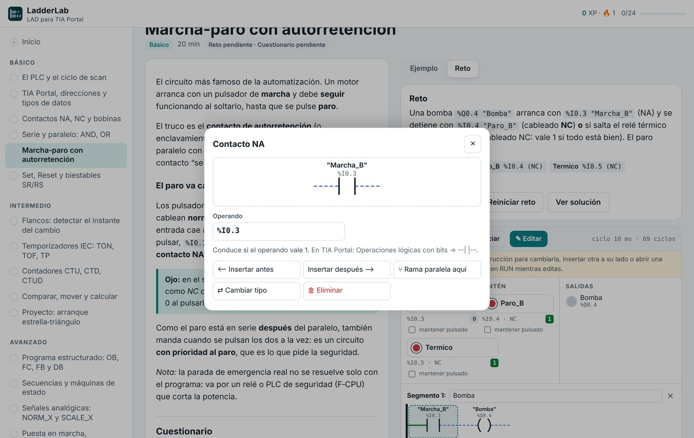
- Pulsa ✎ Editar (en los retos ya viene activado).
- Toca una instrucción, o el recuadro + de un segmento vacío.
- Escribe los operandos: una dirección (
%I0.0,%Q0.1,%M10.0,%MW10,%IW64), un nombre simbólico de la tabla del reto ("Marcha"oMarcha), un miembro de instancia (T1.Q,T1.ET,C1.CV) o un literal (1500,-10,T#5s,T#500ms). La lista sugiere los que ya existen. - Usa las acciones:
| Acción | Resultado |
|---|---|
| ⟵ Insertar antes / Insertar después ⟶ | Agrega una instrucción en serie (AND) a la izquierda o a la derecha. |
| ⑂ Rama paralela aquí | Abre una rama en paralelo (OR) con esa instrucción. |
| ＋ Otra rama paralela | Agrega una rama más al mismo paralelo. |
| Extender rama → siguiente | La rama paralela abarca también la instrucción siguiente (por ejemplo, para que C salte sobre A y B). |
| ← Acortar rama | Lo contrario: saca de la rama su última instrucción. |
| ⇄ Cambiar tipo | Reemplaza la instrucción conservando el operando. |
| 🗑 Eliminar | La quita; las ramas vacías se cierran solas. |
Con el editor activo, cada segmento tiene un campo de comentario y una ✕ para borrarlo; abajo está + Segmento.
Instrucciones disponibles
Contactos NA, NC, flanco P, flanco N y NOT · bobina, bobina negada, Set y Reset · TON, TOF y TP · CTU y CTD · comparador
(==, <>, >, <, >=, <=, también con tiempos) · MOVE · ADD, SUB, MUL y DIV.
Con teclado
Tab recorre las instrucciones del segmento; Enter o Espacio abre el editor; dentro, Tab recorre los campos y botones; Esc cierra y vuelve a la instrucción.
7. Los retos y el corrector
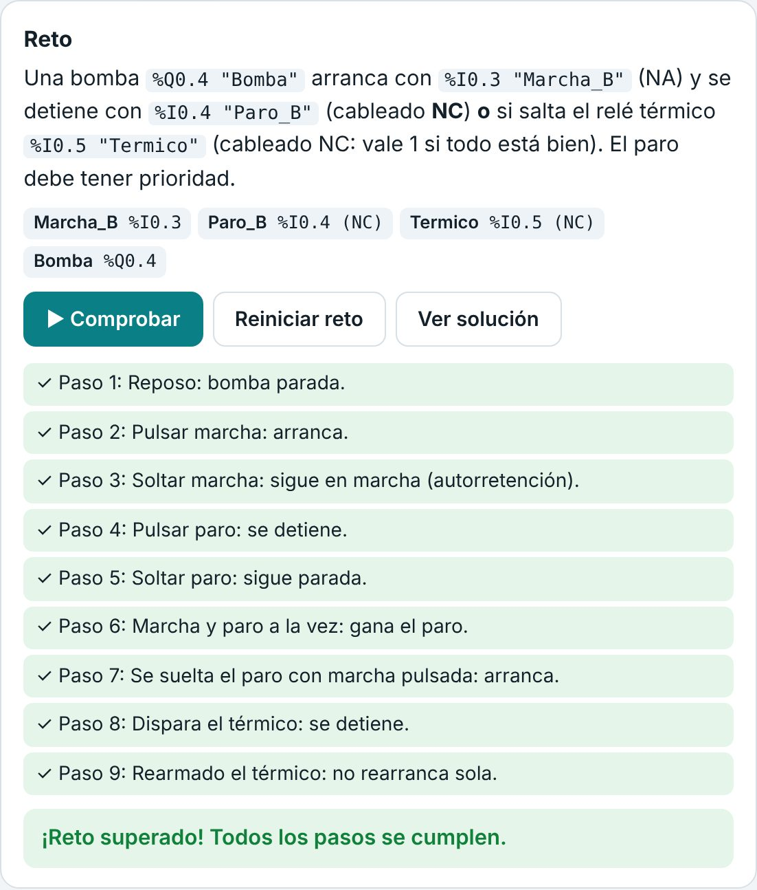
- Lee el enunciado y la lista de variables (las marcadas NC o selector se comportan como tales).
- Programa en el simulador y pruébalo a mano con las entradas.
- Pulsa ▶ Comprobar. El corrector ejecuta tu programa en un PLC aparte, ciclo a ciclo (10 ms), con una secuencia fija de acciones y tiempos.
Si un paso falla, el corrector se detiene y te dice qué esperaba y qué dio tu programa. Además vigila en cada ciclo condiciones que nunca deben ocurrir (dos contactores enclavados a la vez, una faja descargando sobre otra parada) y, en la ruta minera, las fallas del modelo de planta:
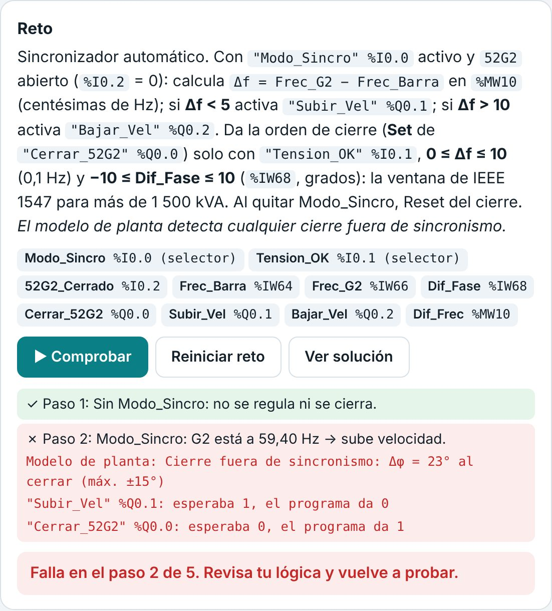
| Botón | Qué hace |
|---|---|
| Reiniciar reto | Vuelve al programa inicial (pide confirmación; pierdes lo hecho). |
| Ver solución | Carga la solución de referencia. El reto se puede completar igual, pero no suma XP ni da su insignia. |
Si el modelo de planta registra una falla mientras pruebas a mano (por ejemplo, un cierre fuera de fase), el simulador lo avisa en el HMI y en la barra de la CPU. Pulsa Reiniciar para borrarla.
8. La ruta de grupos electrógenos y minería
Nueve lecciones con casos de planta concentradora y de respaldo de energía, como los de las operaciones mineras del sur del Perú. Cada una tiene un HMI y un modelo de planta que responde a tu programa.
| Lección | Qué practicas | Qué detecta el modelo de planta |
|---|---|---|
| El grupo visto desde el PLC | Protecciones con inhibición de la presión de aceite en el arranque; alarmas memorizadas | La presión sube 3 s después de arrancar |
| Falla de arranque | Ciclos de arranque y reposo, contador de intentos, alarma overcrank | Arrancador engranado con el motor en marcha; arrancador más de 6 s seguidos |
| TTA red‑grupo | Confirmación de falla, abrir antes de cerrar, retorno con red estable, enfriamiento, transición con retardo | Red y grupo cerrados a la vez; cierre contra la tensión residual de los motores |
| Discrepancia orden‑estado | Supervisión de interruptores con tolerancia, alarma y bloqueo | Interruptor que no cierra o que se dispara |
| Sincronismo en paralelo | Subir/bajar velocidad y cierre dentro de la ventana de IEEE 1547 (Δf ≤ 0,1 Hz, Δφ ±10°) | Cierre fuera de fase, con deslizamiento o con tensión fuera de rango |
| Reparto de carga | Igualar kW con banda muerta | Potencia inversa (protección 32) |
| Arranque por demanda | Arrancar/liberar G2 con histéresis y tiempos; deslastre | G2 tarda 4 s en entrar en barra |
| Fajas en cascada | Sirena de prearranque, arranque contra el flujo, vaciado, pull‑cord | Chutes atollados (faja en marcha sobre otra parada) |
| Bombas de pozo | Histéresis por niveles, alternancia principal/reserva | — |
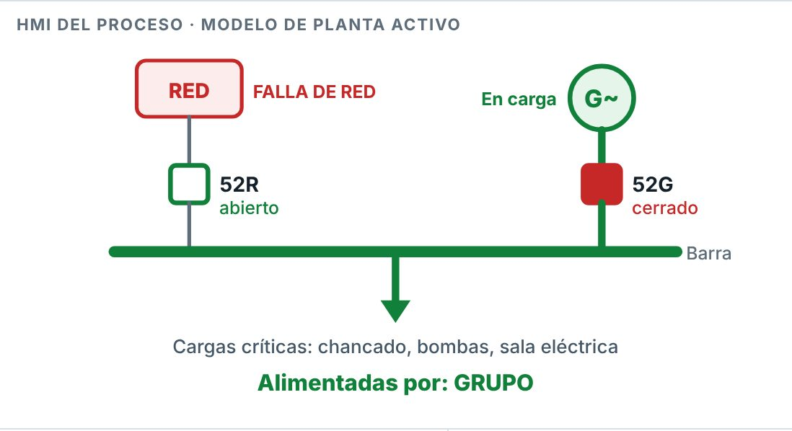
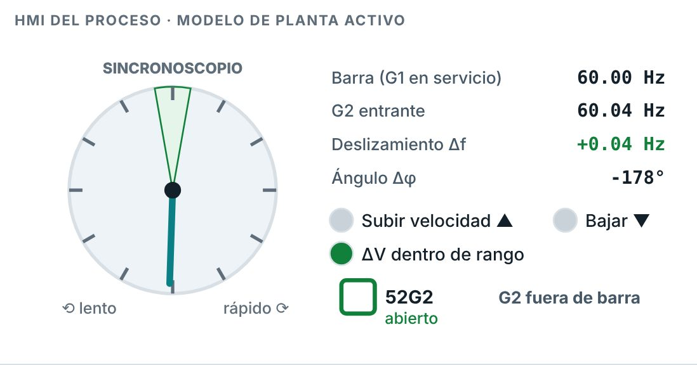
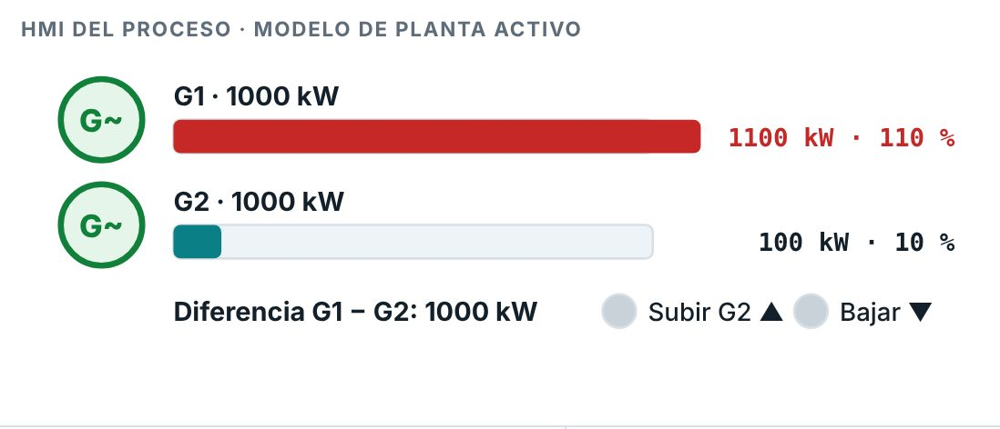
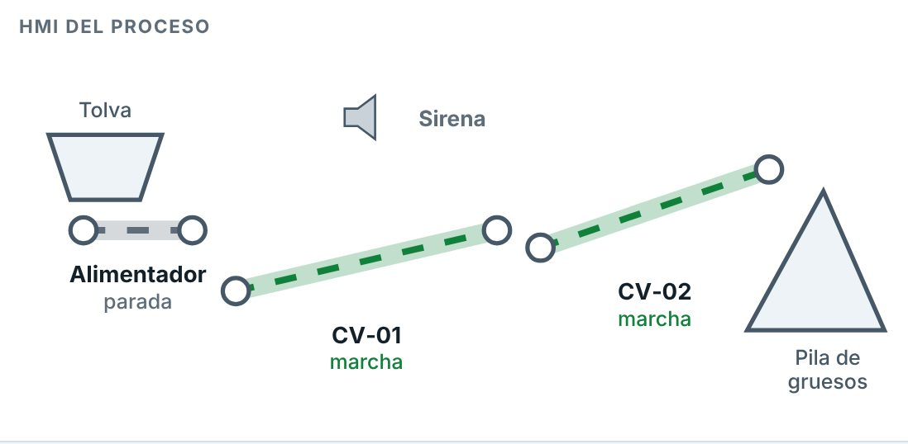
Los tiempos están acortados a segundos para poder practicar (en planta, el retorno de red es de 5 a 30 min y la sirena de prearranque de 10 a 30 s). Cada lección lo indica.
9. Laboratorio libre y referencia
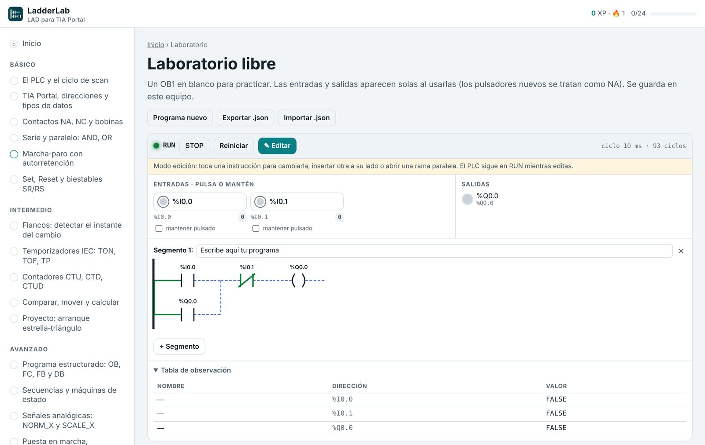
- Laboratorio libre (menú → Herramientas): programa lo que quieras. Las entradas y salidas aparecen solas al usarlas; los
%Inuevos son pulsadores NA (marca mantener pulsado para usarlos como selector). Se guarda solo. - Programa nuevo vacía el laboratorio. Exportar .json descarga tu programa; Importar .json lo recupera en otro equipo o navegador.
- Referencia de instrucciones: cada instrucción dibujada, qué hace y dónde está en la pestaña Instrucciones de TIA Portal.
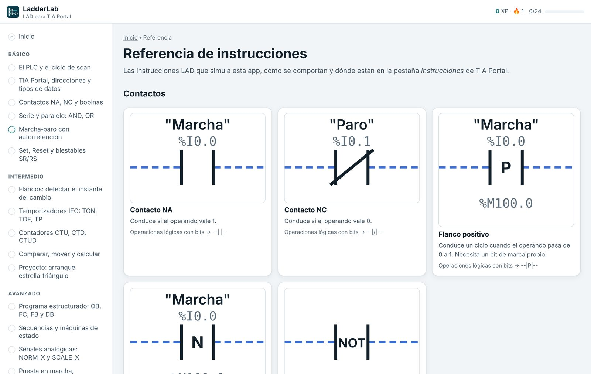
10. Progreso, rangos e insignias
| Acción | Experiencia |
|---|---|
| Respuesta correcta en un cuestionario (se cuenta tu mejor intento) | 10 XP |
| Reto superado (niveles básico a avanzado) | 50 XP |
| Reto superado de la ruta de grupos y minería | 80 XP |
| Reto superado con la solución a la vista | 0 XP |
La racha cuenta los días seguidos en que abriste una lección, respondiste un cuestionario o superaste un reto. Hay 12 insignias: por niveles completos, por los retos clave de la ruta minera, por rachas de 3 y 7 días y por 30 respuestas correctas.
Dónde se guarda: todo vive en el almacenamiento del navegador, en tu equipo; no se envía a ningún servidor. Para empezar de cero, borra los datos del sitio desde la configuración del navegador.
11. De LadderLab a TIA Portal
| En LadderLab | En TIA Portal |
|---|---|
| Segmento | Segmento (Network) del bloque Main [OB1] |
| Variables del reto | Tabla de variables PLC (nombre, tipo, dirección) |
Nombre sobre una caja de temporizador (T1) | Su DB de instancia ("IEC_Timer_0_DB") o una multiinstancia en un FB |
T1.Q, T1.ET, C1.CV | "T1".Q, "T1".ET, "C1".CV |
| Bit de marca del flanco P/N | El operando que se escribe bajo el contacto --|P|-- |
Comparador CMP | Comparación → CMP ==, <>, >… (elige el tipo de dato) |
| RUN / STOP, verde/azul en los segmentos | S7‑PLCSIM y Activar observación (gafas) |
| Tabla de observación | Tabla de observación y forzado |
| Entradas de planta y HMI | Señales de campo y pantallas WinCC (o PLCSIM Advanced con un modelo de planta) |
Para llevar un reto a TIA Portal: crea el proyecto con tu CPU, declara las variables del enunciado con las mismas direcciones, copia los segmentos instrucción por instrucción, compila y pruébalo en S7‑PLCSIM.
12. Límites del simulador
- Simula un subconjunto de LAD: no incluye CTUD, R_TRIG/F_TRIG, NORM_X/SCALE_X, CONVERT, Real ni DInt como instrucciones (se explican en la teoría). Las palabras son Int de 16 bits.
- Al desbordar un Int pone ENO = 0, como TIA; el valor que deja en OUT (saturado en el límite) puede diferir del de la CPU real.
- El ciclo es fijo de 10 ms; no simula tiempos de ciclo variables, OB de alarma cíclica, diagnóstico ni comunicaciones.
- Las funciones de seguridad (paradas de emergencia, pull‑cord) se practican en lógica estándar. En planta van por un relé o PLC de seguridad (F‑CPU), según la evaluación de riesgos (ISO 13849‑1, IEC 62061).
- Los modelos de planta son didácticos: reproducen el comportamiento que importa para el ejercicio, no la dinámica completa de un grupo o una faja.
El detalle está en la auditoría funcional, que revisa la app contra IEC 61131‑3, IEEE 1547, NFPA 110, ISO 13850, EN 620, WCAG 2.2 y otras normas.
13. Solución de problemas
| Síntoma | Solución |
|---|---|
| En Android, la app se ve en blanco | Abriste LadderLab/index.html desde la carpeta: Android no le deja cargar sus archivos. Usa el APK, la web o LadderLab.html (sección 2). |
| Windows no deja ejecutar el instalador | En el aviso «Windows protegió su PC», toca Más información → Ejecutar de todas formas. Si tu empresa bloquea instaladores, usa el .zip: no instala nada. |
| En la computadora se ve en blanco | Descomprime toda la carpeta (no abras el archivo desde dentro del .zip) y usa un navegador actualizado. |
| Android no deja instalar el APK | Activa Instalar apps desconocidas para Chrome o Archivos en Ajustes. Si dice que hay un conflicto de paquete, desinstala la versión anterior. |
| No se guarda mi progreso | La navegación privada o el bloqueo de datos del sitio impiden guardar. Usa una ventana normal. |
| «⚠ falla de planta: pulsa Reiniciar» | Tu programa provocó una condición peligrosa en el modelo (lee el mensaje del HMI). Corrige y pulsa Reiniciar. |
Una instrucción muestra <??.?> en rojo | Le falta el operando: activa Editar, tócala y escríbelo. |
| El reto falla en un paso que «a mano» funciona | Lee el mensaje: el corrector usa tiempos exactos. Revisa los PT de los temporizadores y que la salida se escriba en un solo segmento. |
| Un pulsador queda «pegado» | Desmarca mantener pulsado. |
| Quiero empezar de cero | Borra los datos del sitio en la configuración del navegador. |